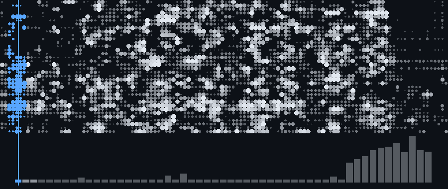

Atrium · one real region of the lattice frame, and the year's 53 real weeks, swept together one week at a time. 218,016 events, 31 repositories.
Thomas van Pul · Design Engineering, Imperial College London. I build hardware and the software that runs it.
Atrium · A spatial desktop for macOS, in Swift and Metal. It draws the machine's own record as a navigable field: every mark a real event, depth is recency. Private repo.
218,016 events from 31 repositories · 18,470 lines of Swift · 418 assertions over 38% · 10 MB resident
Acceptance has never passed: 11 criteria, all UNMEASURED. Engineering depth, not delivery.
BlueBand · A wearable motion band — enclosure, board, firmware and app, one person doing the whole chain. blueband-concept
Numeris · Plaid in, market data alongside it, normalised into Postgres, out through a typed API. Used daily, which is what makes it real. Finance-Tracker
Interstellar Sanctuary a Malaysia property launch map, password-gated · HFQ forming with Dr Nan Li at the Dyson School · Air defence economics a self-directed paper · IRIS an always-on assistant daemon
Python · TypeScript · React · Node · PostgreSQL · Fusion 360 · Ansys · SimScale · KiCad · TIG welding · FDM printing · composite layup
Second-year MEng Design Engineering, Dyson School, Imperial College London · Dutch · Penang / London
thomasvp.com · linkedin.com/in/vanpulthomas · vanpulthomas@gmail.com